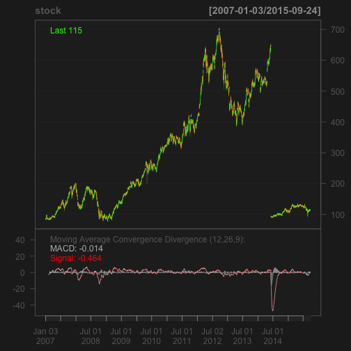

Learn and Trade Stocks with Interactive Tools
StokIt
StokIt is the tool to
- Study technical analysis techniques interactively
- Predict and Forcast the stock trend with different models(to be implemented)
The codes can be accessed at Github
The technique used for implementation
- R with quantmod package
- Shiny
Code to read stock data from yahoo.com and draw the chart
library(quantmod)
stock <- getSymbols("AAPL", src = "yahoo", auto.assign = FALSE)
chartSeries(stock, TA = "addMACD()")

To Be Implemented
- Models for forecasting and predicting
- Error control
- More interactions